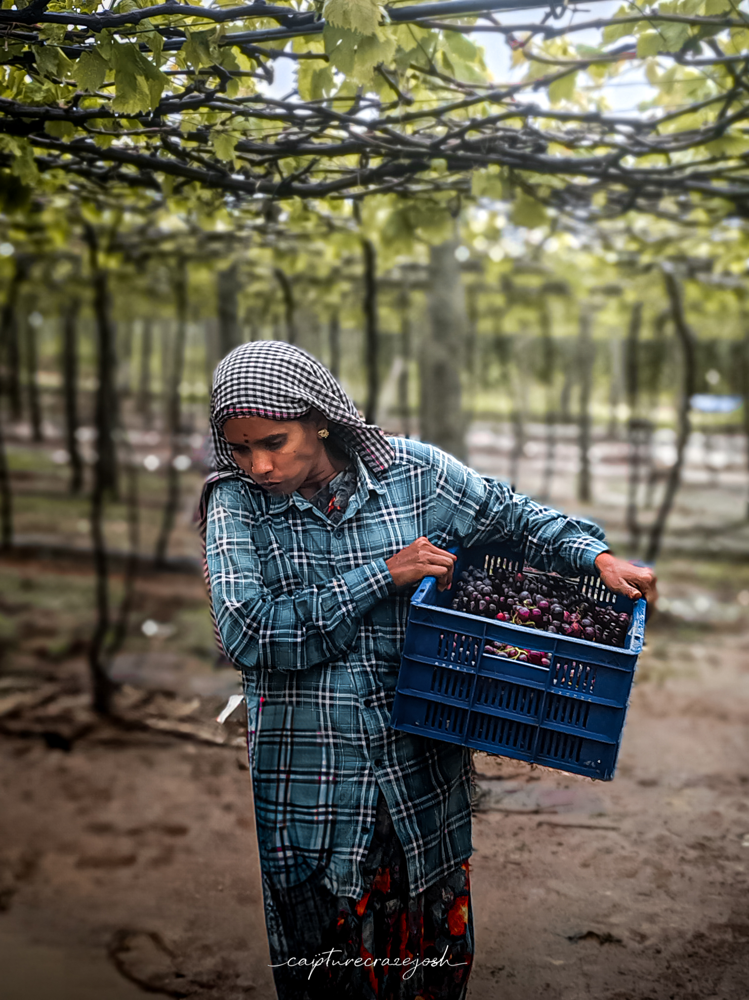

Book Reel
A cinematic glimpse into the world of Unspoken Corners
Book Reel
A cinematic glimpse into the world of Unspoken Corners

Roots That Remember
Gunacave, Moto G85

Whispers of Lavender
Vagamon, vivo Y11

Quiet Guardian of Light
Studio, vivo Y11

Windows of Quiet Memories
Mannanam, vivo Y11

Where the Road Slows You Down
Munnar, vivo Y11

Rain Interrupted Ride
vivo Y11

🌿 Carrying the Weight of Seasons 🧺
moto g85

Sunset Silhouette
Paruthumpara, Moto G85

Before the Rain Speaks
Mattupetti Dam, vivo Y11

Framed by Silence
Samsung M15